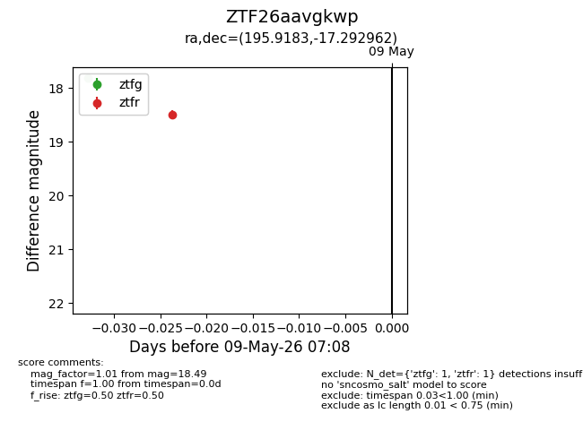
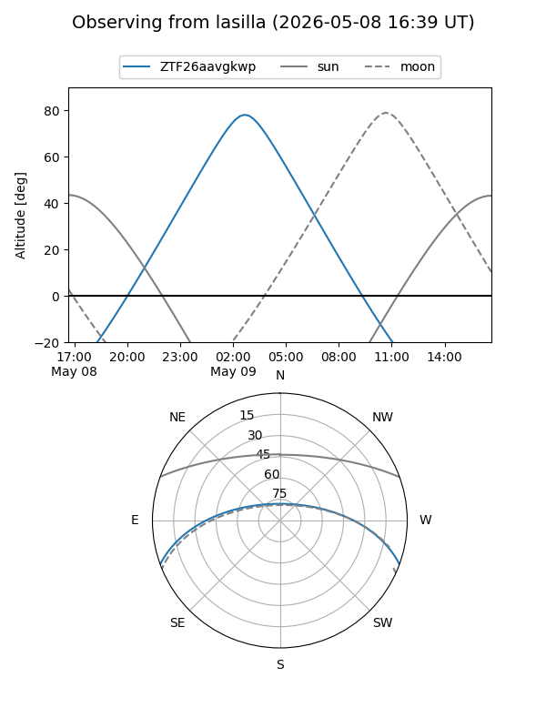
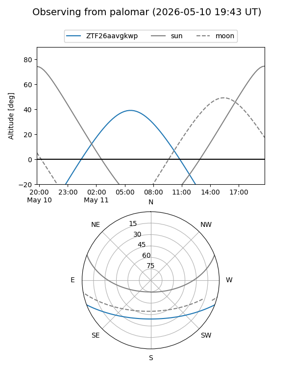
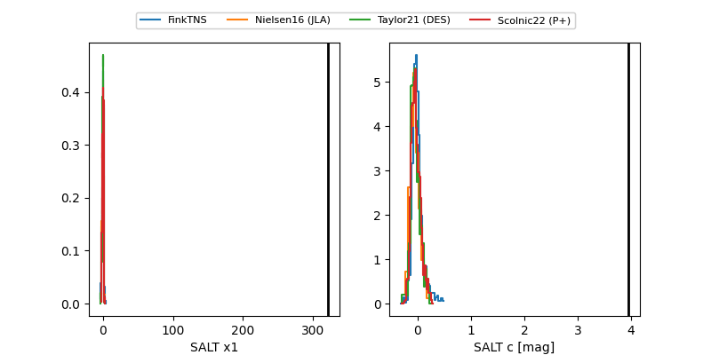

ZTF26aavgkwp
Target ZTF26aavgkwp at 2026-05-09 07:09
Aliases and brokers:
FINK: link
Lasair: link
ALeRCE: link
alt names
ZTF26aavgkwp (ztf,fink_ztf)
Coordinates:
equatorial (ra, dec) = 195.9183,-17.29296
equatorial (HMS+DMS) = 13:03:40.39,-17:17:34.66
galactic (l, b) = (307.0989,+45.47977)
Flags:
Photometry:
last ztfg=17.81, ztfr=18.49
1 ztfg, 1 ztfr detections
Lightcurve

Visibility


Additional plots
